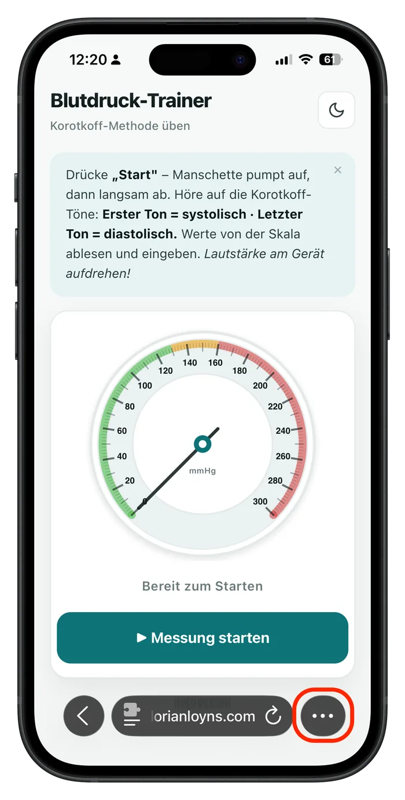
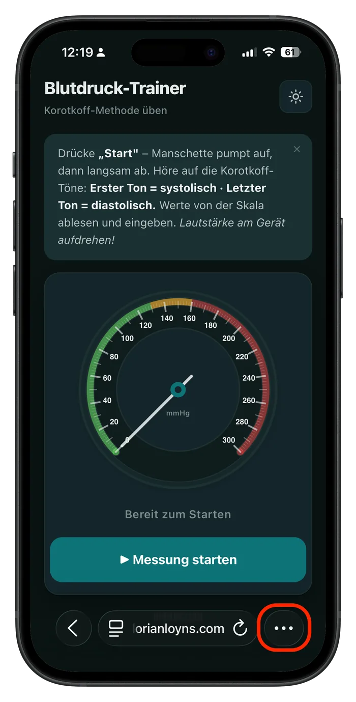
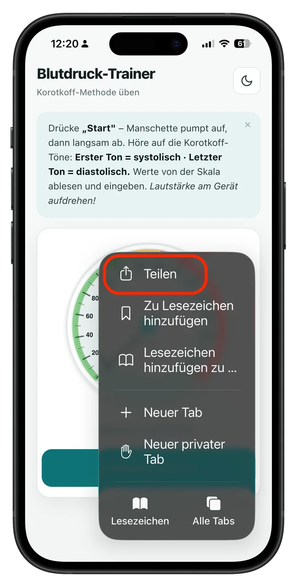
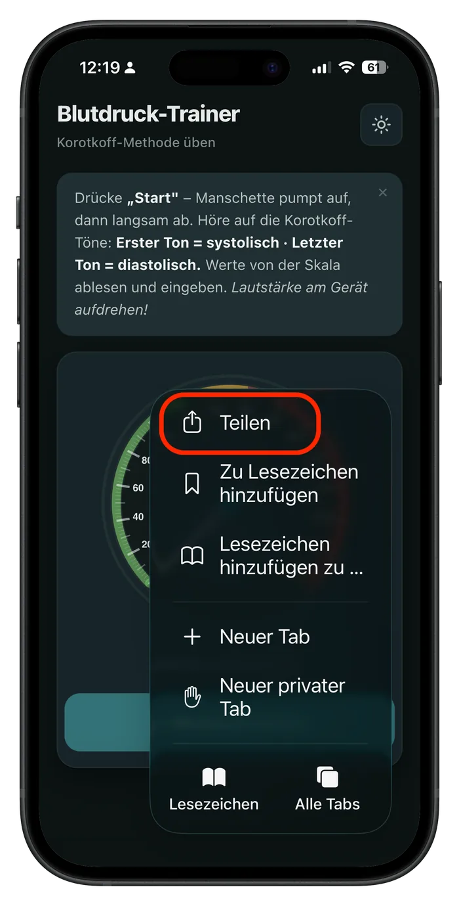
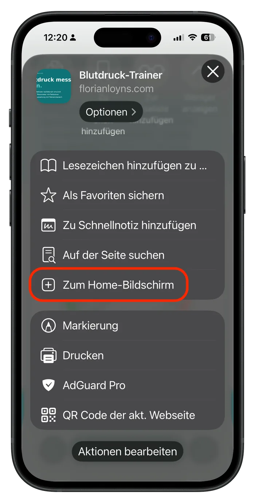
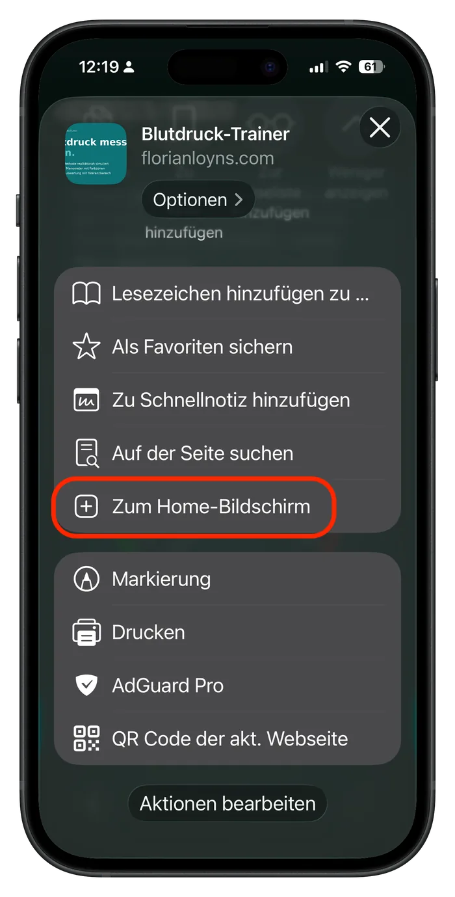
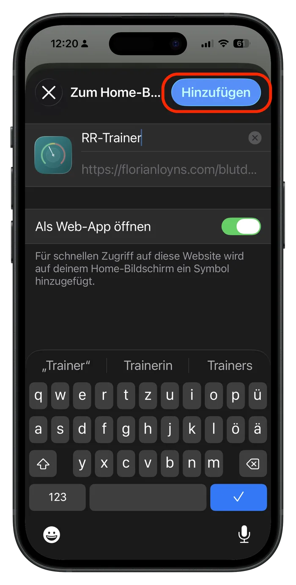
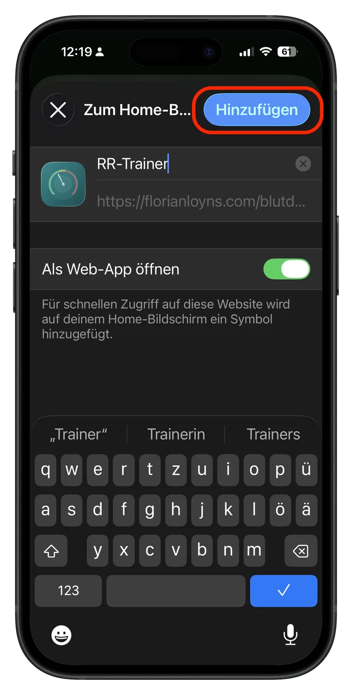

Warum gibt es das hier? Ich unterrichte als Lehrer für Pflegeberufe und baue die Werkzeuge, die mir im Unterricht gefehlt haben – jedes aus einer konkreten Situation im Klassenzimmer. Alle bleiben kostenfrei, ohne Anmeldung und ohne Tracking. Die Selbsttests sind Reflexionsimpulse, keine Diagnostik; Feedback und Fehlerhinweise gern per E-Mail oder als Issue auf GitHub.
Für Auszubildende
Üben, nachschlagen, rechnen – im eigenen Tempo, am Schulrechner oder auf dem Handy.
Klinische Situationen üben
Fallbasierte Szenarien mit Sofort-Feedback – für klinisches Denken, Kommunikation und Stationsalltag.
Klinisches Urteilen trainieren
Fallbasiertes Üben vom Situationsverständnis bis zur Pflegeplanung – strukturiert statt auswendig pauken.
Wie dieses Tool entstanden ist Fallstudie →Die Übergabe strukturiert üben
SBAR, ISBAR oder ISOBAR – wähle dein Schema und übe an drei Alltagsszenarien. Mit Musterübergabe am Ende.
Jetzt ausprobieren → DemenzValidation im Alltag trainieren
12 Szenarien aus dem Umgang mit Menschen mit Demenz – sagbare Sätze plus passende Handlung.
Jetzt ausprobieren → Spiel · Endlos-ModusHabt ihr noch ein Bett?
Endlos-Quiz zur Bettenzuweisung – Iso-Regeln, Kohorten, Geschlechtertrennung. Schicht starten, unter Zeitdruck richtig entscheiden, Highscore knacken.
Jetzt spielen → SchmerzSchmerz-Trainer
Drei Module in einer App: Schmerzskalen (NRS, VAS, BESD, KUSS …), OPQRST-Anamnese und WHO-Stufenschema. Mit Lern-, Test- und Probieren-Modus – die Skalen am Patientenbett direkt anwenden.
Jetzt lernen → VitalzeichenBlutdruck messen üben
Animiertes Manometer mit Korotkoff-Tönen – Nadel von der Skala ablesen statt digital anzeigen. Sofortige Auswertung mit Toleranzbereich ±8 mmHg.
Jetzt üben →Wissen & Reflexion
Begriffe festigen, Strukturen verstehen, das eigene Lernen reflektieren – ohne Zeitdruck, im eigenen Tempo.
Pflegelatein
Karteibox mit über 600 Begriffen aus Anatomie, Pathologie und Pflegepraxis. Was du weißt, kommt seltener wieder; was wackelt, ist morgen wieder dran.
Jetzt lernen → Wissen · SozialversicherungSozialversicherungs-Trainer
Die fünf Säulen der Sozialversicherung als interaktive Tempel-Architektur erkunden – plus Übungs-Modus mit 15 Stolperfallen-Szenarien für die Examensvorbereitung.
Jetzt lernen → Reflexion · KommunikationDas eigene Hören reflektieren
Das 4-Ohren-Modell nach Schulz von Thun in 12 Alltagssituationen – zeigt dein lautestes und dein leisestes Ohr.
Jetzt ausprobieren → Reflexion · LernmythenDer Lerntyp-Mythos im Selbsttest
12 Fragen zu auditiv, visuell, kommunikativ und kinästhetisch – und am Ende die Auflösung, warum Lernen nach dem eigenen Lerntyp nachweislich keinen Vorteil bringt.
Jetzt ausprobieren →Rechner
Live-Rechner für typische Berechnungen in der Pflegeausbildung – Werte einstellen, Ergebnis und Rechenweg sofort sichtbar.
Pflegegrad-Rechner
Sechs NBA-Module bewerten, Pflegegrad und Pflegegeld live mitsehen. Mit offiziellem SGB-XI-Wortlaut und den Sondergewichtungen in Modul 4.
Jetzt rechnen → InfusionInfusionsrechner
Tropfenrate, Laufzeit oder Volumen einer Schwerkraft-Infusion. Werte einstellen, Ergebnis und Rechenweg live mitsehen.
Jetzt rechnen → EnergiebedarfBMI & Tagesbedarf
Body-Mass-Index, Grundumsatz und Tagesbedarf nach Mifflin-St Jeor und DGE-PAL. Werte einstellen, Rechenweg live.
Jetzt rechnen →
So installierst du die Apps auf dem Handy
Alle Trainings, Selbsttests und Rechner lassen sich auf jedem Smartphone wie eine App installieren – direkt aus dem Browser, ohne App Store, ohne Anmeldung. Einmal eingerichtet, läuft die App auch offline.
Anleitung für iPhone und Android anzeigenAnleitung ausblenden
Auf iOS installieren
- Tool im Safari-Browser öffnen
- Auf das Drei-Punkte-Menü unten rechts tippen
- Nach unten scrollen, „Zum Home-Bildschirm" wählen
- Namen bestätigen – fertig
Auf Android installieren
- Tool im Chrome-Browser öffnen
- Auf das Drei-Punkte-Menü oben rechts tippen
- „App installieren" oder „Zum Startbildschirm hinzufügen" wählen
- Bestätigen – fertig


Schritt 1 Safari-Browser öffnen

Schritt 2 Drei-Punkte-Menü tippen

Schritt 3 Zum Home-Bildschirm

Schritt 4 Namen bestätigen – fertigFür Lehrende
Werkzeuge für Unterrichtsplanung und Prüfungen – und Plugins, mit denen Folien am Smartboard interaktiv werden.
Werkzeuge
Browser-Werkzeuge für typische Aufgaben im Pflegeunterricht – ohne Installation, offline nutzbar.
Lerngruppen klug einteilen
Vier Einteilungsmethoden mit Drag-and-Drop-Nachbearbeitung – inklusive Word- und PDF-Export.
Jetzt nutzen → DidaktikArbeitsaufträge strukturieren
Evidenzbasierte Vorlagen nach Hattie und Bloom – mit Operatoren-Bibliothek und Word-Export.
Jetzt nutzen → PrüfungsplanungOSCE-Prüfungen planen
Rotationspläne mit automatischer Logik, editierbaren Pausenzeiten und drei fertigen Word-Exporten.
Jetzt nutzen → UnterrichtArbeitsphasen timen
Countdown für Beamer und Smartboard – mit Arbeitsauftrag, Endzeit und leisem Gong. Per Link aus den Folien startbar.
Jetzt nutzen →Reveal-Plugins
reveal.js ist ein freies Präsentations-Framework im Browser. Meine Plugins machen es fit für den Unterricht – mit dem Finger am Smartboard bedienbar, frei und quelloffen (MIT). Alle Techniken live im Showcase →
Präsentationen am Smartboard bedienen
Bedienleiste für Touch-Display und Smartboard: markieren, zoomen, pausieren, Übersicht und Vollbild – ohne Tastatur oder Maus.
Fachbegriffe auf Folien erklären
Fachbegriffe auf der Folie markieren – bei Hover oder Tipp erscheint die Erklärung direkt am Wort, auch für Lernende zuhause.
Abbildungen direkt im Bild beschriften
Marker direkt auf der Abbildung: Ein Tipp öffnet Name und Erklärung an der Stelle, über die gerade gesprochen wird. Mit visuellem Editor.
Interaktive Aufgaben auf Folien
Fünf Aufgabentypen – Single-Choice, Mehrfachauswahl, Wahr/Falsch, Reihenfolge, Zuordnung. Mit dem Finger lösbar, im PDF mit Lösung.
Punktetafel-Quiz zum Abschluss
Spielbrett aus Kategorien und Punktwerten für die große Abschlusswiederholung. Als PDF wird daraus ein Frage-Antwort-Arbeitsblatt.
Wortwolke als Advance Organizer
Wortwolke der Schlüsselbegriffe zum Einstieg – aktiviert Vorwissen; ein Tipp holt den Begriff in den Fokus.
Zitate Satz für Satz erschließen
Zitate und Quellentexte Satz für Satz entwickeln – die Klasse liest genau die Zeile, über die gerade gesprochen wird.
Abläufe Schritt für Schritt zeigen
Pflegemaßnahmen Schritt für Schritt zeigen: Der ganze Ablauf bleibt als Leiste sichtbar, Begründungen erscheinen erst auf Tipp.